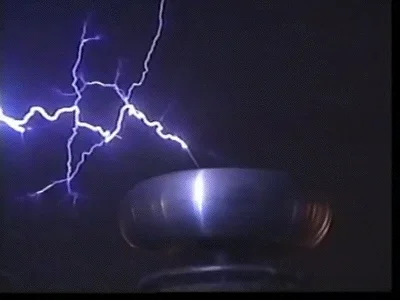
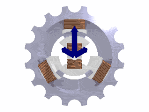

Teslin transformator, rezonancijski transformator ili Teslina zavojnica je transformator za proizvodnju visokog napona (do nekoliko milijuna volti) i izmjenične struje visokih frekvencija (do nekoliko stotina kiloherca) kojeg je izumio Nikola Tesla 1891. Osnova uređaja sastoji se od primarne zavojnice, visokonaponskog električnog kondenzatora, iskrišta, sekundarne zavojnice i vršnog sferičnog ili toroidnog kondenzatora.
Okretno polje ili rotacijsko polje je magnetsko ili električno polje koje se vrti oko neke osi. Takva polja u električnim strojevima nastaju vrtnjom rotora na kojem se nalaze magneti (na primjer u sinkronim strojevima) ili napajanjem dvaju ili više prostorno razmaknutih statorskih namota višefaznim električnim strujama (na primjer u asinkronim strojevima). Tako na primjer za stvaranje kružnoga okretnoga magnetskoga polja statorski namoti trofaznoga dvopolnoga asinkronoga motora trebaju biti međusobno jednaki, prostorno razmaknuti za 120°, a njima trebaju teći trofazne struje međusobno fazno (vremenski) pomaknute za 120°.
